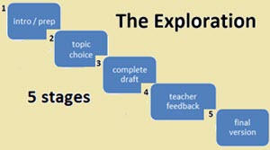
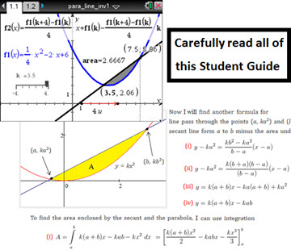
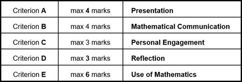
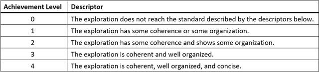
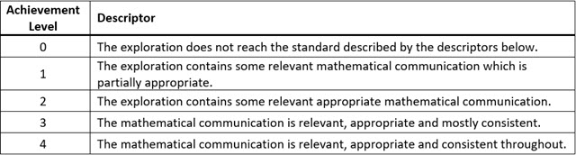
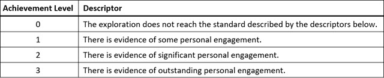
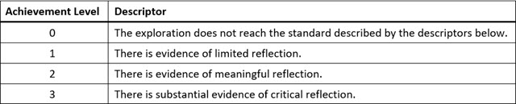
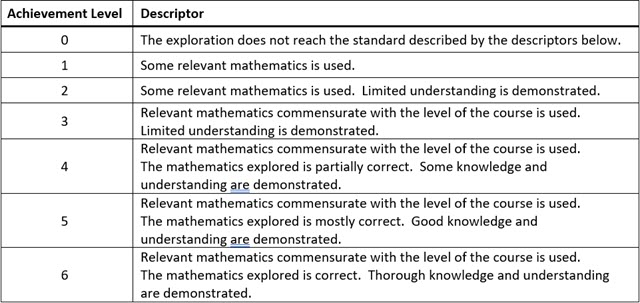
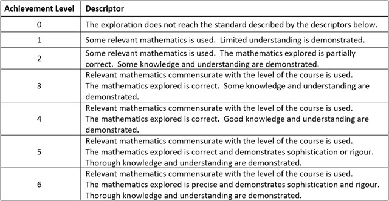

IB Docs (2) Team
IB Docs (2) Team

Exploration Student Guide
IB Mathematics SL & HL
Analysis & Approaches + Applications & Interpretation
Internal Assessment – The Exploration
~ Student Guide ~


go to the Managing Exploration page to download this Student Guide as a PDF with fillable fields (for deadlines)
1. What is the Internal Assessment (IA) in IB Mathematics ?
Internal Assessment in the Analysis & Approaches course and in the Applications & Interpretation course consists of a single internally assessed component (i.e. marked by the teacher) called a mathematical Exploration (or just the “Exploration”). The Exploration contributes 20% to a student's overall IB score for the course.
2. What is the Exploration ?
The Exploration is a written paper (12-20 pages) involving a mathematical topic of interests to the student. A student will choose a topic in consultation with their teacher after conducting their own research.
3. How is the Exploration assessed ?
The Exploration will earn a score out of 20 marks based on the following five criteria. Further details for each criterion and guidance for addressing them is provided later in this guide.

[note: The remainder of this Guide is addressed to the student]
Some important points to consider:
♦ In your Exploration you need to write about mathematics and not just do mathematics.
♦ Any idea, method, image, content, etc that is not your own must be cited at the point in the Exploration where it is used. Just listing your sources in a bibliography is not enough and may lead to the IB deciding that malpractice has occurred.
♦ The Exploration is an opportunity for you to learn more about a mathematical topic in which you are genuinely interested. You will be rewarded (personal engagement) for explaining your interest in the topic, and for demonstrating curiosity, creativity & independent thinking.
♦ Your audience is your fellow students – that is, you need to write your Exploration so that your classmates in Maths HL can read and understand it. Thus, it is not necessary toexplain in great detail basic mathematics with which your classmates will be familiar.
♦ You will be rewarded (reflection) for expressing what you think about the mathematics you are exploring. You should endeavour to pose your own questions and try to answer them using suitably sufficient level of mathematical ideas and procedures.
♦ You are required to submit a complete draft of your Exploration – containing an introduction, a clearly stated aim (objective), a conclusion and sufficient content to address all five criteria. You will receive written feedback and then have an opportunity to revise it to submit a final version.
♦ All of the work you do on your Exploration must be your own. When finished with your final version you will be required to sign a ‘declaration’ that states, “I confirm that this work is my own and is the final version. I have acknowledged each use of the words or ideas of another person, whether written, oral or visual.”
Timeline
Your teacher will organize the following five stages for work on the Exploration. There will be a start date and end date (deadline) for stages 2 to 5.
1. Introduction / Preparation
2. Topic Choice
3. Writing a Complete Draft
4. Teacher Written Feedback
5. Completing Final Version
Step 1: Introduction / Preparation
Read the two articles listed below. The articles are not examples of IB maths Explorations but appeared in a professional journal for American math teachers and describe in detail how teachers might engage students in the exploration of a particular mathematical problem. Both articles illustrate good writing about mathematics at an appropriate level for IB mathematics. We will discuss aspects of the articles in relation to expectations for the Exploration you will write for your IA.
● article 1: Thinking out of the Box … Problem
● article 2: Rugby and Mathematics: A Surprising Link among Geometry, the Conics, and Calculus
Step 2: Choosing a topic for your Exploration
This stage is very important and you need to make a serious effort and listen to your teacher’s advice. Click here for a list of 200 possible topics. Browse through the list and do some quick research (perhaps using Wikipedia) on any topic that catches your interest. There will be a 2-week consultation phase during which you will discuss your topic ideas with your teacher. You must complete an Exploration Proposal Form (see page 6) for each of your ideas before meeting with your teacher. Some of the questions that need to be addressed include: (1) does the topic involve math at a suitable level for your IB maths course? ; (2) is the topic narrow enough so that it can be treated sufficiently in 12 to 20 pages? ; and (3) does the topic lend itself to demonstrating personal engagement involving independent thinking and creativity? Can you envision some way that you could apply something of your own – your own viewpoint, your own examples, your own models (conceptual or physical), your own questions & ideas, etc.
⇛ Your topic must be approved by your teacher by the given deadline ⇚
Step 3: Write a complete draft
Before you start writing your Exploration be sure to carefully read through the details for all five of the assessment criteria that are given below. Along with a brief description and achievement level descriptors, there is also helpful Further Guidance notes for each criterion.
A draft is not an abbreviated or incomplete version of your Exploration. It must be complete – including an introduction, a conclusion and a bibliography – with sufficient content to address your stated objective(s) and be in the range of 12 to 20 pages (double spacing, font Times New Roman). Your Exploration needs to be logically organized; use appropriate mathematical terminology and notation; include explanatory diagrams, graphs, tables, etc; contain citations to indicate where a source is used; and focuses on relevant mathematics. It is important to include your own thoughts, questions, reflections & ideas when possible. It is recommended that you write in the first person; for example, “I decided that the best method is _____ because I realized that …”
Although the Exploration is an individual assignment and all the work must be your own, you are strongly encouraged to regularly consult with your teacher. Your teacher can provide verbal guidance and feedback while you are writing your draft.
⇛ Submit a paper and electronic version of your draft to your teacher by the given deadline ⇚
Step 4: Teacher feedback
Your teacher will provide written feedback on the draft of your Exploration. Be sure to ask questions about any comments / feedback that you do not completely understand.
Step 5: Submit final version of your Exploration
From the time you receive written feedback on your draft you will have around 2 to 3 weeks to revise your draft and complete the final version of your Exploration. Before submitting your final version complete this student checklist (checklist document will open in a new window).
⇛ Submit a paper & electronic version of your final Exploration to your teacher by the deadline ⇚
1. Choose a topic in consultation with your teacher that: (i) you’re interested in; (ii) involves math at a suitable level; (iii) is narrow enough for 12-20 pages; and (iv) has opportunities for personal engagement.
2. Your Exploration must have an aim or objective which involves doing some mathematics. It is important to maintain a focus on the overall aim/objective and a focus on mathematical concepts and methods.
3. Although all the work on your Exploration must be your own, do not hesitate to ask your teacher for advice and feedback at any stage. Your teacher will provide written feedback on your draft.
4. Be sure you fully understand the expectations of the five assessment criteria, and refer back to them while you are planning and writing your Exploration.
5. The Exploration is an opportunity to complete a significant assessment item (20% of IB score) while not under the pressure of timed exam conditions. Take advantage of the opportunity by following instructions, meeting deadlines, engaging & reflecting in your own way, and enjoying some math you are interested in.
Criteria for the Exploration
Criterion A: Presentation (4 marks)
This criterion assesses the organization and coherence of the exploration. A well-organized exploration has an introduction, a rationale (a brief explanation of why the topic was chosen), describes the aim of the exploration and has a conclusion. A coherent exploration is logically developed and easy to follow.

ж Further Guidance ж
▪ A complete exploration will have all steps clearly explained, and will meet its aim.
▪ Organization refers to the overall structure or framework, including the introduction, body, conclusion etc.
▪ A coherent exploration displays a logical development and is not difficult to follow (‘reads well’).
▪ A concise exploration remains focused on the overall aim and avoids irrelevant material.
▪ Key ideas and concepts need to be clearly explained.
▪ Graphs, tables and diagrams should be embedded in the text where most appropriate and not be put in an appendix at the end of the document.
▪ The use of technology is not required but strongly encouraged where appropriate.
▪ It is absolutely critical that the use of a source is cited (footnoted) at the location where it is used.
▪ Your bibliography must list all sources (books, websites, etc) you consulted when writing your Exploration.
Criterion B: Mathematical Communication (4 marks)
This criterion assesses to what extent you are able to clearly and effectively use multiple forms of mathematical representation such as formulae, diagrams, tables, graphs and models.

ж Further Guidance ж
▪ You must use appropriate mathematical language (notation, symbols & terminology).
▪ Use multiple forms of mathematical representation – such as formulae, diagrams, tables, charts, graphs and models, where appropriate.
▪ The meaning of key terms should be clear and any variables or parameters should be explicitly defined.
▪ All graphs, tables & diagrams should be clearly labelled – and include captions where appropriate.
▪ Do not use calculator or computer notation unless it is software generated and cannot be changed.
Criterion C: Personal Engagement (3 marks)
This criterion assesses the extent you engage with the exploration and make it your own. This includes independent thinking, creativity, addressing personal interest and presenting mathematical ideas in your own way.

ж Further Guidance ж
▪ It is important to choose a topic in which you are genuinely interested.
▪ Personal engagement can include: thinking independently or creatively, presenting mathematical ideas in your own way, exploring the topic from different perspectives, or making and testing predictions.
▪ Ways to show personal engagement include: investigating your own questions & conjectures; making upyour own examples; presenting ideas & results in your own words; creating your own models or functions.
Criterion D: Reflection (3 marks)
This criterion assesses how well you review, analyze and evaluate your exploration. Although reflection may be seen in the conclusion, it should also exist throughout the exploration. Reflection may be demonstrated by considering limitations or extensions, and relating mathematical ideas to your own previous knowledge.

ж Further Guidance ж
▪ Simply describing results represents limited or superficial reflection. To achieve a score higher than 1 you will need to provide deeper and more sophisticated consideration of methods and results.
▪ Ways of showing meaningful reflection include: linking results to the aim of your Exploration; commenting on what you have learned; considering limitations; or comparing different mathematical approaches.
▪ Ways of showing critical reflection include: considering implications of results; discussing strengths and weaknesses of methods; considering different perspectives; making links between different areas of math.
▪ Substantial evidence is likely to mean that reflection is present throughout the exploration.
Criterion E: Use of Mathematics (6 marks)
* descriptors for SL and HL are not the same *
This criterion assesses to what extent you use mathematics that is relevant to your Exploration. The mathematics explored should either be part of the syllabus, at a similar level, or slightly beyond. You need to demonstrate that you understand the mathematics by providing clear comments and explanations, and illustrating with examples or applications. The mathematics can be regarded as correct even if there are a few minor errors so long as they do not detract from the flow of mathematics or lead to an incorrect or inaccurate result. Lines of reasoning must be shown to justify steps in the mathematical development of the exploration.
E: Use of Mathematics – SL

ж Further Guidance ж
▪ You must clearly demonstrate your understanding of the mathematics you write about in your Exploration. For knowledge and understanding to be thorough it must be demonstrated throughout.
▪ The mathematics only needs to be what is required to support the development of the exploration. It is better to do a few things well than a lot of things not so well. If the mathematics used is relevant to the topic being explored, commensurate with the level of the course and understanding is clearly demonstrated, then it can achieve a high level in this criterion.
E: Use of Mathematics – HL

▪ You must clearly demonstrate your understanding of the mathematics you write about in your Exploration. For knowledge and understanding to be thorough it must be demonstrated throughout.
▪ Sophistication in mathematics may include understanding & use of challenging math concepts, looking at a problem from different perspectives and seeing underlying structures to link different areas of mathematics.
▪ Rigour involves clarity of logic and language when making mathematical arguments and calculations.
▪ Precise mathematics is error-free and uses an appropriate level of accuracy at all times.
-- end of student guide --
 Twitter
Twitter
 Facebook
Facebook
 LinkedIn
LinkedIn